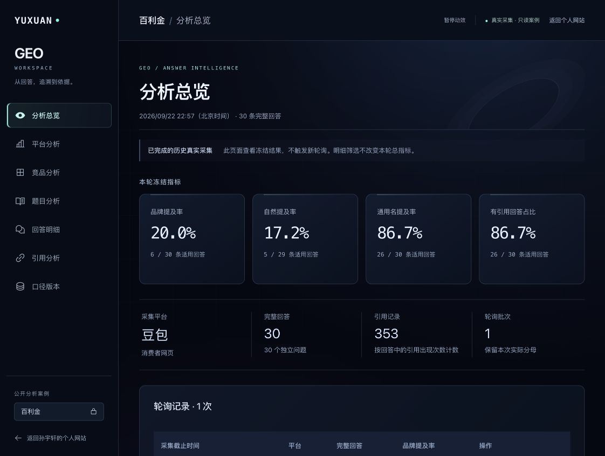

SUN YUXUAN / PERSONAL EXPLORATIONS
让专业信息，
穿过噪声。
成为答案。
我是孙宇轩。从医药终端到药企客户，再到 GEO。
我参与客户沟通、长尾问题规划、专业内容生产与审核协同、渠道发布和监测复盘。
SHANGHAI, CN医药 × 内容 × AI
SIGNAL / 001连接信息与判断FROM COMPLEXITY TO CLARITY
从业务现场，到内容与工具。客户需求洞察专业内容组织GEO 监测复盘AI 工作流实践
01 / SELECTED WORK
探索，落在实处。
从需求、资料到交付与复盘。
这里记录我参与的项目，以及为工作搭建的工具。
FEATURED PROJECT / GEO
从品牌提及，
追溯到每条回答。
GEO 分析工作台，围绕一次真实轮询，查看品牌与竞品提及、逐题回答和引用来源。让每个指标，都能回到原始记录。
品牌与竞品逐题分析回答与引用数据导出
进入 GEO 分析工作台 ↗我负责业务需求、流程规则与结果核对，借助 Codex 搭建并迭代工具。
当前公开：百利金 × 豆包 · 2026.09.22
30 条完整回答 · 353 条引用 · 历史只读案例
GEO / 分析总览实际界面 ↗

↗
02 / EVIDENCE让专业内容，有据可查。
借助 Codex 整理 94 条文献题录、41 条限定引用表述，关联研究条件、原文位置和使用边界，支持内容选材、事实核查与引用追溯。
＋
03 / STRATEGY从客户需求，到白皮书方案。
围绕客户拓展零售市场的需求，协同医学团队提出定制白皮书方案，调研竞品、优化标书与问卷设计；完成 3 轮内部提案与预算审批，推动项目立项。
孙宇轩THE HUMAN BEHIND THE SIGNAL
02 / ABOUT ME
懂一点业务现场，
多问一句为什么。
我有制药工程背景，经历过医药终端渠道、药企客户服务与 GEO 项目。工作从理解真实需求开始，再把问题拆成内容、流程和可以执行的动作。
目前，我参与客户沟通、长尾问题规划、专业内容生产与审核协同、渠道发布和监测复盘。工具帮助我处理重复步骤，业务判断和结果核对仍由我负责。
查看完整经历 ↗GEO 策略与内容运营实践
上海三道几何智能体科技有限公司
客户需求、内容规划、发布与监测协同 · 职能方向
药企客户与项目协作
上海梅斯医药科技有限公司 · 大客户经理
医药终端与渠道业务
上海九州通医药有限公司 · 终端大区经理 / 业务管培生
03 / MY APPROACH
我习惯这样推进工作。
01 / UNDERSTAND先把问题问清楚
谁需要这份内容？要帮助对方做出什么判断？先确定目标，再选择方法。
02 / ORGANIZE让资料找到位置
整理来源、使用条件和表达边界，让每一个关键判断都能回到依据。
03 / BUILD把流程做成工具
将重复步骤交给工具，把精力留给需求理解、判断与内容质量。
04 / REVIEW用结果重新提问
记录发生了什么，说明数据口径，从复盘中找到下一轮值得改进的地方。
TAKE A CLOSER LOOK
完整经历，收进两页简历。
个人品牌版 · PDF · 2 页 · 含联系方式